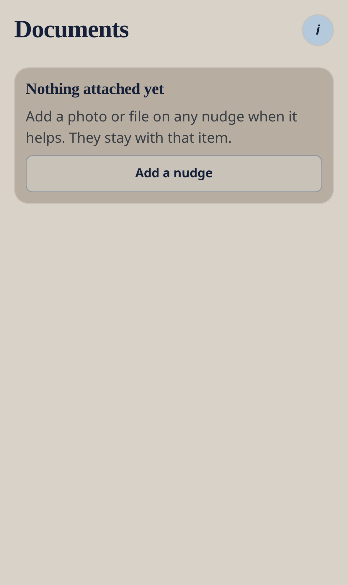

Core module — no Ready4 pack required
Documents
Photos and files stay on the nudge they belong to.
Nudge me Ready v3 · 0.3.1 · Menu → Documents, or Important documents on an item.

Workflow
- Open any nudge.
- Attach a photo or file if it helps (tickets, letters, ID copies).
- Find them again from Documents.
Good to know
- Keep device passcode and app lock on for sensitive files.